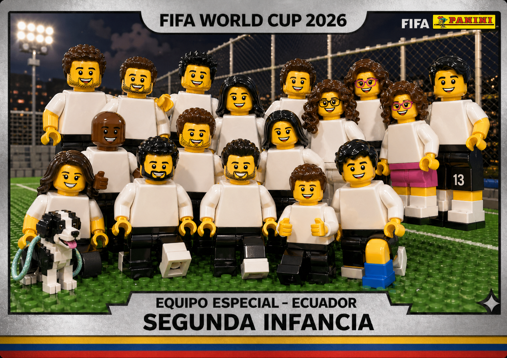
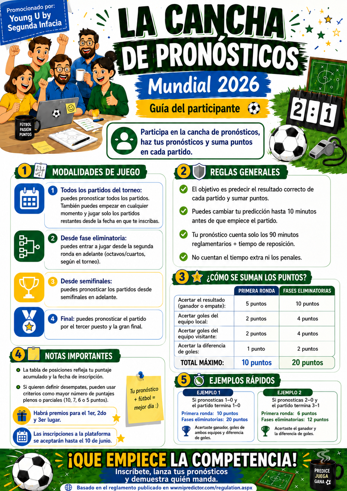

Mundialito
Se llegó a cuartos de final.
Club de fútbol
“Vive tu nueva infancia”
Entrenamos, compartimos y disfrutamos el juego con amigos. Un equipo con identidad premium, energía dinámica y conexión real.
Ver eventos
Mundial 2026
Arma tus marcadores, sigue el calendario completo y compite con el equipo.
Haz clic en el botón para ingresar a los pronósticos.

Partidos de interés
| Selección | Fecha | Partido | Etapa | Sede |
|---|
Calendario dinámico
Calendario del club y nuevas actividades.
Se llegó a cuartos de final.
Hora de mejorar
¡El equipo crece!
El equipo crece aún más.
Una jornada amigable para seguir mejorando juntos y disfrutar cada jugada.
Nos reunimos hoy para entrenar con alegría, compañerismo y ganas de crecer.
En Segunda Infancia nuestra misión es entrenar fútbol con amigos, disfrutando del juego y fortaleciendo la conexión humana dentro y fuera de la cancha.
Crecer futbolísticamente en un entorno competitivo y cercano.
Jugar con intensidad, respeto y alegría en cada entrenamiento.
Una marca de club moderna, elegante y con personalidad propia.
El live stream se cargará solo cuando lo abras.